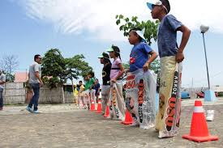
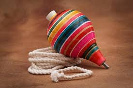

Obejetivo principal: Rescatar la cultura y las tradiciones de nuestra comunidad a traves de los juegos clasicos que disfrutaban
nuestros padres y abuelos.
En esta pagina dcoumentaremos las reglas oficiales, los materiales necesarios y el cronograma de nuestro proximo festival
escolar
Aqui encontraras la gran diversidad de juegos oficiales del mundo entero

Es un juego con sacos, donde el que llega primero sin caerse a la meta gana

Juego de girar el trompo usando una piola
Aqui mediante una tabla con los cronogramas y conoceras los puntajes de este festival
| Horario | Juego programado | Categoria | Puntaje al ganador | Juez a cargo |
|---|---|---|---|---|
| 09:00 am | Carerra de ensacados | Bachillerato | 50 puntos | Prof. ed fisica |
| 10:30 am | Trompo juego | Ed. basica | 30 puntos | Tutor de curso |
| 12:00 am | Rayuela | Abierto | 20 puntos | Comite estudiantil |
Para tener mas informacion acercase a inspeccion o a rectorado ubicado a lado de la capilla
la dolorosa
!Muchas gracias por ver¡
Te esperamos !ven y veras¡